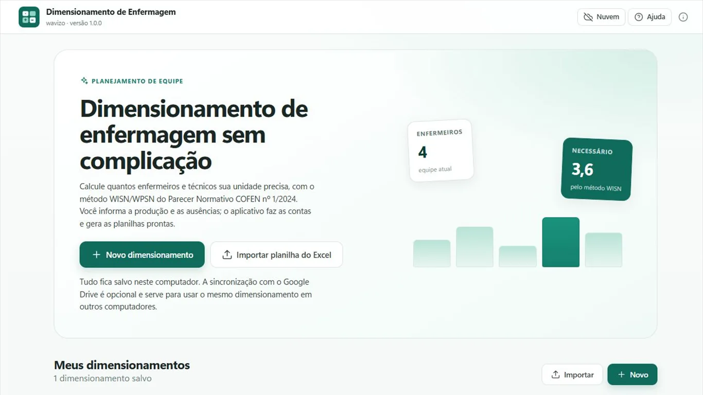
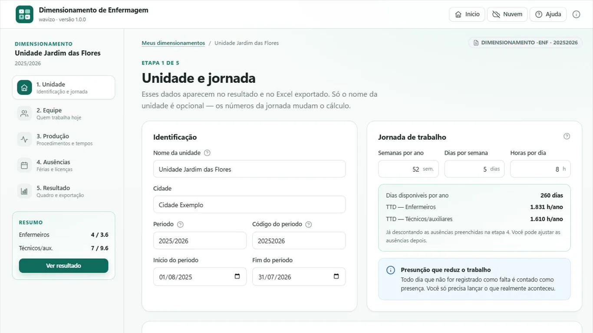
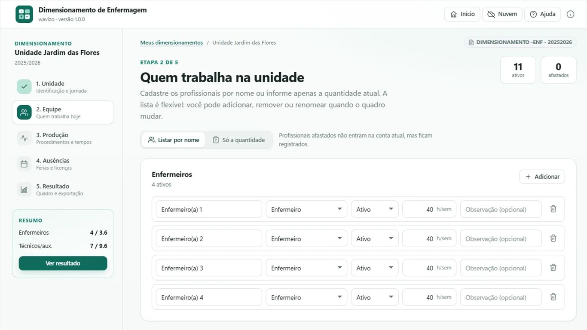
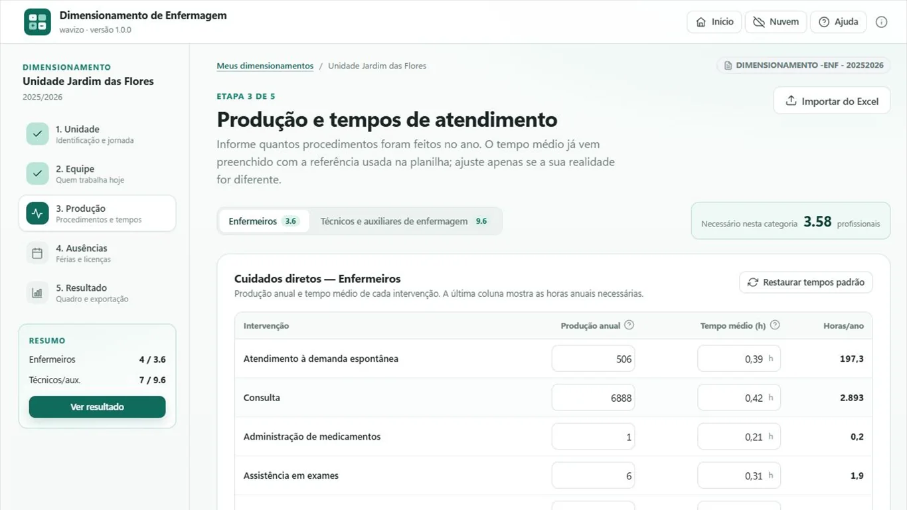
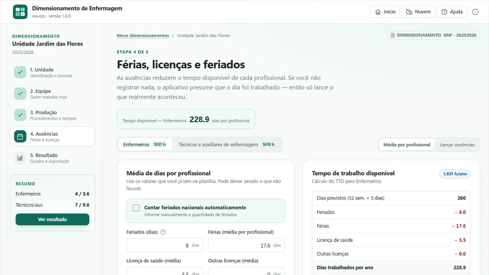
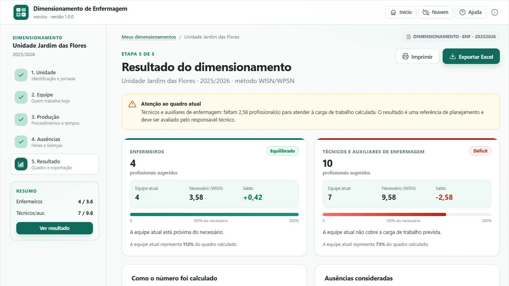

Informe a produção, a equipe e as ausências. O aplicativo calcula o quadro pelo método WISN/WPSN, mostra o saldo por categoria e gera as planilhas do dimensionamento prontas para atualizar o documento oficial.
Funciona offline, sem cadastro e sem enviar dados para servidores próprios. A sincronização com o Google Drive é opcional.

Cada etapa tem uma tela só e um resumo sempre visível à esquerda. Você pode voltar, corrigir e comparar sem perder o que já preencheu.

Semanas por ano, dias por semana e horas por dia definem quantos dias e quantas horas cada profissional tem no período. O aplicativo já mostra o TTD parcial enquanto você digita.

Cadastre a equipe por nome — útil para lançar férias e licenças depois — ou informe somente a quantidade atual de cada categoria. As duas formas convivem no mesmo dimensionamento.

Informe quantas vezes cada procedimento foi realizado no ano. O tempo médio vem da referência da planilha e pode ser ajustado para a realidade do serviço; a última coluna mostra as horas anuais necessárias na hora.

As ausências reduzem o tempo disponível de cada profissional. Você pode trabalhar com a média da equipe ou lançar cada afastamento por pessoa, com data e quantidade de dias.

O resultado compara o quadro atual com o necessário, mostra o saldo em profissionais e o percentual de cobertura de cada categoria. Quando falta gente, o alerta aparece antes de você exportar.
O método é o WISN/WPSN do Parecer Normativo COFEN nº 1/2024. Nada fica escondido: cada etapa aparece na tela de resultado, com as horas e os percentuais usados.
Jornada contratual, antes de qualquer ausência.
dias previstos = semanas × dias por semana → 52 × 5 = 260
Descontando feriados, férias, licença de saúde e outras licenças.
dias trabalhados = 260 − 8 − 17,6 − 5,5 = 228,9
Horas por profissional no período, por categoria.
TTD = dias trabalhados × horas por dia → 228,9 × 8 = 1.831 h
Produção anual de cada procedimento multiplicada pelo tempo médio.
horas diretas = Σ (produção × tempo médio)
As horas diretas viram profissionais; o percentual de atividades indiretas aumenta o quadro.
necessário = (horas diretas ÷ TTD) ÷ (1 − indiretos ÷ 100)
Comparação com o quadro atual. A sugestão arredonda para cima, para não faltar gente.
saldo = atual − necessário · sugestão = arredondar(necessário)
Para evitar expectativas erradas antes de instalar.
Não é um sistema oficial de órgão público nem substitui o documento assinado pela chefia de enfermagem.
Não é prontuário eletrônico. O aplicativo não pede nome de paciente, diagnóstico ou qualquer dado clínico.
Não é dispositivo médico e não toma decisão sobre atendimento. É uma ferramenta de planejamento de pessoal.
Não corrige a planilha por você. Se o arquivo não tem o detalhe dos procedimentos, ele é lido como conferência, não como dimensionamento.
O aplicativo lê o Excel do dimensionamento mesmo quando ele foi gerado por outro sistema, com formatação fora do padrão. Depois de importar, você revisa cada etapa antes de calcular.
Lê produção, tempos, cuidados indiretos, ausências e quadro atual das abas de enfermeiros e técnicos.
As abas saem com o período no nome, no mesmo formato usado no documento do dimensionamento.
DIMENSIONAMENTO -ENF - 20252026DIMENSIONAMENTO - 20252026 - T.O extrato “Detalhamento de procedimentos lançados” é lido nos dois formatos: total por mês ou detalhado por profissional e procedimento.
O cálculo acontece no seu computador. O aplicativo não pede nome de pacientes, prontuário ou qualquer dado clínico. Se você conectar o Google Drive, apenas o arquivo de backup do dimensionamento é enviado, em uma pasta privada do aplicativo.
O acesso ao Google é opcional e usa somente o escopo drive.appdata: o
aplicativo não consegue ver, listar ou alterar os demais arquivos do seu Drive.
Ler a política de privacidade.
O uso das informações recebidas de APIs do Google segue a Política de Dados do Usuário dos Serviços de API do Google, incluindo os requisitos de Uso Limitado (Limited Use). Os dados não são vendidos, não são usados para publicidade e não são lidos por pessoas.
Política, termos e aviso legal em linguagem direta.
Se a sua dúvida não estiver aqui, escreva para mmr05@hotmail.com.
Não. O cálculo, o armazenamento e a exportação funcionam offline. A internet só é usada se você optar por conectar o Google Drive para backup. O aplicativo não envia dados para servidores próprios e não tem anúncios.
Neste computador, na área de dados do aplicativo. Ao desinstalar, o Windows pode remover esses dados — por isso existe a opção de backup no Google Drive.
O backup usa uma pasta privada do aplicativo (appDataFolder) e o mesmo
arquivo serve para outro computador com a mesma conta Google.
Sim, quando ela tem as abas de produção, ausências e dimensionamento. O aplicativo mostra um resumo do que encontrou antes de aplicar.
O relatório pode vir em dois formatos. O resumido traz apenas o total de procedimentos por mês; o expandido traz uma linha por profissional e procedimento. O aplicativo lê os dois e mostra totais mensais, por categoria e dos últimos 12 meses. Nenhum deles permite calcular o quadro sozinho: faltam o agrupamento nos dez grupos do WISN, os tempos médios, as atividades indiretas, as ausências e o quadro atual.
Não. O nome aparece no resultado e no Excel exportado, mas o cálculo depende apenas da jornada, da produção, das ausências, dos cuidados indiretos e do quadro atual.
Não. O aplicativo aplica a fórmula e organiza os dados; a validação, a assinatura e a decisão sobre o quadro continuam sendo do responsável técnico de enfermagem e da chefia da unidade.
Windows 10 e Windows 11, 64 bits. A versão web serve para conhecer a interface e testar o cálculo; o backup no Google Drive e a exportação completa ficam disponíveis na versão instalada pela Microsoft Store.
O aplicativo é gratuito. Não há assinatura, cadastro nem cobrança dentro do programa.
Pela Microsoft Store, junto com as atualizações do Windows. Se você usa a versão de teste, é preciso baixar o pacote mais recente.
Instale pela Microsoft Store ou abra a versão web para conhecer a interface.
Nursing workforce planning for Windows, based on the WISN/WPSN method (COFEN Normative
Opinion 1/2024). Enter procedures, staff and absences to get the required headcount by
category, then export the official spreadsheets. Everything runs offline; Google Drive
backup is optional and limited to the app’s private appDataFolder.
Independent project by wavizo, not affiliated with any government body.
Aplicativo independente, desenvolvido por wavizo. Não é um sistema oficial de órgão público, prontuário eletrônico ou dispositivo médico. O resultado é uma referência de planejamento e deve ser validado pelo responsável técnico de enfermagem.